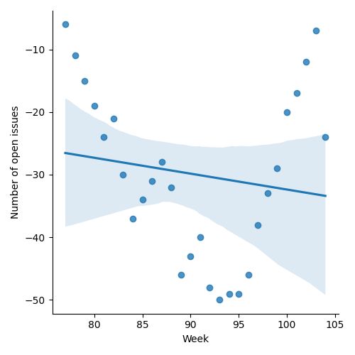
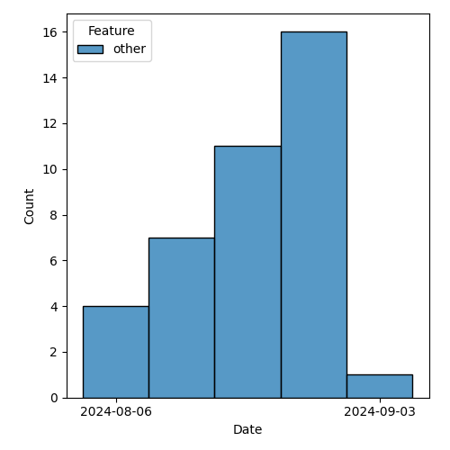

QT4 CG Meeting 089 Minutes 2024-09-10
Meeting index / QT4CG.org / Dashboard / GH Issues / GH Pull Requests
Table of Contents
Draft Minutes
Summary of new and continuing actions [1/8]
[ ]QT4CG-080-07: NW to update the build instructions in the README[ ]QT4CG-082-02: DN to work with MK to come to agreement on the fn:ranks proposal[ ]QT4CG-087-01: DN to update PR #1228 to reflect MK’s compromise and update the vulnerabilities[ ]QT4CG-088-01: NW to consider how best to add a dedication to MSM.[ ]QT4CG-088-03: MK to add an example of duplicate function-annotations being returned.[ ]QT4CG-088-04: [Someone] needs to update the processing model diagram needs vis-a-vis the static typing feature[ ]QT4CG-089-01: CG to draft a PR that attempts to resolve the operators described in #755 to a smaller number of orthogonal choices.[X]QT4CG-089-02: WP to provide a more complete citation for the CRC-32 algorithm.- Shortly after the meeting, WP reported that the “cite this” button on the spec landing page proposes: "IEEE Standard for Ethernet," in IEEE Std 802.3-2022 (Revision of IEEE Std 802.3-2018) , vol., no., pp.1-7025, 29 July 2022, doi: 10.1109/IEEESTD.2022.9844436.
1. Administrivia
1.1. Roll call [10/12]
[X]David J Birnbaum (DB)[X]Reece Dunn (RD) [:15-][ ]Sasha Firsov (SF)[X]Christian Grün (CG)[X]Joel Kalvesmaki (JK)[X]Michael Kay (MK)[ ]Juri Leino (JLO)[X]John Lumley (JWL)[X]Dimitre Novatchev (DN)[X]Wendell Piez (WP)[X]Ed Porter (EP)[X]Norm Tovey-Walsh (NW). Scribe. Chair.
Welcome, David. Brief introductions all around.
1.2. Accept the agenda
Proposal: Accept the agenda.
Accepted.
1.2.1. Status so far…
These charts have been adjusted so they reflect the preceding six months of work.

Figure 1: “Burn down” chart on open issues

Figure 2: Open issues by specification

Figure 3: Open issues by type
1.3. Approve minutes of the previous meeting
Proposal: Accept the minutes of the previous meeting.
Accepted.
1.4. Next meeting
This next meeting is planned for 17 September. Any regrets?
None heard.
1.5. Review of open action items [1/7]
(Items marked [X] are believed to have been closed via email before this agenda was posted.)
[ ]QT4CG-080-07: NW to update the build instructions in the README[ ]QT4CG-082-02: DN to work with MK to come to agreement on the fn:ranks proposal[ ]QT4CG-087-01: DN to update PR #1228 to reflect MK’s compromise and update the vulnerabilities[ ]QT4CG-088-01: NW to consider how best to add a dedication to MSM.[X]QT4CG-088-02: CG to add an issue about built-in, named record types.[ ]QT4CG-088-03: MK to add an example of duplicate function-annotations being returned.[ ]QT4CG-088-04: [Someone] needs to update the processing model diagram needs vis-a-vis the static typing feature
1.6. Review of open pull requests and issues
1.6.1. Blocked
The following PRs are open but have merge conflicts or comments which suggest they aren’t ready for action.
- PR #1414: XSLT spec abstract, introduction
- PR #1355: 1351 Add "declare record" in XQuery
- PR #1296: 982 Rewrite of scan-left and scan-right
- PR #1227: 150 PR resubmission for fn ranks
- PR #1209: 1183 Add transient mode and the transient{} expression
- PR #1185: 1179 array:values, map:values → array:get, map:get
- PR #1062: 150bis - revised proposal for fn:ranks
- PR #832: 77 Lookup returning path selection
- PR #529: 528 fn:elements-to-maps
Please work to unblock these if you can!
1.6.2. Merge without discussion
The following PRs are editorial, small, or otherwise appeared to be uncontroversial when the agenda was prepared. The chairs propose that these can be merged without discussion. If you think discussion is necessary, please say so.
- PR #1425: 1424 Fix typo
- PR #1423: Clarify parse-uri/build-uri encoding rules, and remove options
- Note: an alternative to/replacement for PR #1388
- PR #1419: 1337bis Replace a few remaining occurrences of "atomic value"
- PR #1418: 1415 Add to lists of XSLT declarations and instructions
- PR #1417: 1408 Fix reference to "function conversion rules" in XPTY0117
- PR #1413: Dispose of action QT4CG-080-05, add absolute to parse-uri
- PR #1412: Fix typo in uri-structure-record
- PR #1393: 1391 Change function-annotations to return a sequence
- Accepted last week but not merged?
Proposal: merge them without discussion.
Accepted.
1.6.3. Close without action
2. Technical agenda
2.1. Issue #755: Expression for binding the Context Value
See issue #755.
There has been a lot of discussion in this issue and a lot of controversy. Please review the issue and be prepared to engage in productive discussion.
Remember that we are designing a language for several different constituencies: new users, casual users, experienced users, and expert users, at least. We all start as new users and rise to some level of experience with each language and to some extent each language feature.
It’s reasonable to argue that a feature has implications with respect to new users. But it’s equally reasonable to argue that a feature (or the lack of a feature) has implications for expert users.
- CG begins with a short demonstration
- Motivation
- (CG demonstrates some queries using current and proposed syntaxes.)
- The first motivation is to be able to bind more than one item to the context by explicitly mapping it.
- CG motivates the recent introduction of
=!>to the language - NW: So the distinction between
!and⏵is that the⏵collects the sequence together and passes it as single argument. - CG: Yes.
- JK: The motivation is to re-establish the context item when you’re using arrows.
- CG: Yes.
- Syntax
- (CG reviews the various synax proposals in issue #755)
- Various other proposals have been made:
\,!!,=.>, etc.- CG: But it would be nice to get rid of the three-character arrows.
- CG: MK proposed
->which was at one time used in function calls (but is now available). - CG: Another idea was a keyword,
context { expression } { … } - CG: Also proposed:
let . := …, but that doesn’t seem better thanlet $f := …- … Using
let .is also ambiguous in some contexts
- … Using
- Naming
- CG: You could call it focus expressions
- … pipeline operator, mostly used to change things
- … context expression
- … value map operator
- CG: You could call it focus expressions
- Motivation
- RD: On the syntax front, one of the constraints we currently have is limiting
ourselves to ASCII. It’s easier to type, might complicate file encodings.
If we wanted to use the
⏵character, we’d have to address those problems.- In terms of naming, there’s a difference between the focus and the context. The focus is just part of the context.
- MK: The context includes all the in-scope variables, for example.
- CG: I wouldn’t recommend
⏵, I was just using it as a placeholder. - JWL: Where did we use
->. - CG: We experimented with it in function calls, but don’t use it any more.
- JWL: Using
=>for the context value and->for the context item would have some appeal. - JK: The first alternative was binding with
let. I sort of do that automatically.- … The third option, gets to mapping arrow which I often think of as the
for-each operator. It’s equivalent in a more verbose way would be a
forloop. - … Those are all in
ExprSingle - … Sometimes I’ve wanted to change the context in other places.
- … I think if we have a shortcut sytax, we should have a more verbose alternative.
- … It would be nice to be able to rebind the context for any single expression.
- … What if we just introduce a keyword in front of any
ExprSinglethat let you declare a context? - … You then have a verbal mechanism that can do more than we can do with the short cut syntaxes.
- … The third option, gets to mapping arrow which I often think of as the
for-each operator. It’s equivalent in a more verbose way would be a
- CG: I like the idea of having two ways to do this would be good.
- JK: To piggy back on that, I don’t begruge anyone using the shortcut syntaxes, I just don’t tend to do it. I often use the for expression instead of the mapping arrow, for example.
- MK: Going to motivation, I think there are two primary use cases: setting the
context value for evaluating something and the other is thinking of it more as
a pipeline. It’s convenient if you’re writing a pipeline that you don’t have
to introduce variables. People don’t think of it that way, but path
expressions work this say, each “/” binds the context for part of the path.
- … So path expressions are a kind of a pipeline.
- … I think the important use case is the pipeline one; it’s more general and embraces the two-step one.
- … Thinking of it as a pipeline makes it natural to me to use some sort of arrow operator.
- … If we can that arrow operator to replace the current
=!>, then great. - … JK’s proposal using context syntax gets quite complicated when you nest it.
- … Grammatically, I doubt that it works unless you have braces as delimiters.
- … Two adjacent expressions without an operator in between is always problematic.
- … I’m disinclined to provide multiple ways to do it. I think that’s a problem for us.
- RD: There’s a “with” syntax for def…
- MK: Nope, that’s gone.
- RD: If we did introduce this, that would fit in naturally.
- … A
returnkeyword would also be an alternative to brace delimiters.
- … A
- DN: I think that we’re putting the cart before the horse. We’re talking about
syntax, but I don’t even agree that this is even necessary.
- … We know it isn’t necessary because we have other ways of doing things.
- … In the comment thread, I demonstrated how to use the arrow operator to replace two of the examples.
- … Before talking about other things, we need better motivation.
- … Using
.in some subexpressions as the context item and in others as a “context sequence” is very, very confusing. - … I think this is not just about novices. Lots of commenters found it confusing.
Liam, for example, expressed concern about using
.in different senses. - … What solutions are there? One is not to do anything. We also have the
function
fn:chainthat can be used to make chains. - … The one use case that seems unavoidable is when the context value is not
the first argument. We can have a function called
flipthat reorders function arguments. arguments. Then all you need is the arrow operator. - … If someone really wants ways to make expressions more complicated, then I
think we should use a different variable not
.. Maybe$$something, for example.
- MK: DN has raised the question of whether our decision to generalize the
context value a year ago was a good idea. I have mixed feelings about it. I
don’t like going backwards to revisit decisions that we’ve made. But sometimes
it’s necessary.
- … If we stick with the decision to generalize the context value, and it is useful for things like array filtering. The generalization of the context value was motivated in part by that desire.
- … If we keep that, then we do need a way to set the context value. Otherwise it’s a large gap in the language.
- DN: I agree with MK. It’s obviously confusing to use
.in these different ways. If we need something for a value, use$$instead. The.has been an item for three versions of XPath. - CG: I’ve used the syntax
declare context value := 1 to 5to declare sequences to the context item for a long time. In a database context, it makes a lot of sense to bind a collection. For users it often doesn’t matter if thousands of items are stored in 1 document or many. No one has expressed any confusion about having.address multiple documents. - NW: Could we have a proposal that really addresses the orthogonality of
=!>,!, etc. - CG: I could do a pull request that makes a stab at it.
- MK: I think that’s a good idea.
ACTION QT4CG-089-01: CG to draft a PR that attempts to resolve the operators described in #755 to a smaller number of orthogonal choices.
2.2. PR #1360: 1348 Some grammar simplifications
See PR #1360
MK introduces the PR.
- MK: This purely does some syntax refactoring to avoid some duplicated productions.
- … The key changes are in the EBNF appendix.
- … It doesn’t change the syntax, it just removes some duplicated productions.
- … Some things that just served as a comma separated list have been inlined.
- … etc.
- JWL: If this PR goes through, I’ll try before the next meeting to run some tests in my iXML grammar.
Proposal: accept this PR.
Accepted.
2.3. PR #1428: 1426 Add notes on endianness of CRC-32
See PR #1428
MK introduces the PR.
- MK: This just adds a note that this function always returns its result in big-endian order. If libraries return it in little-ending, implementors should beware.
- WP: I think I found the relevant citation, but it’s a big, restricted document.
- MK: A useful non-normative citation might be better.
- MK: We had this problem with regular expressions, it’s hard to find a definitive citation.
- … I’ve left the question of the citation open for the moment.
Some more discussion of the citation to the big IEEE document.
ACTION QT4CG-089-02: WP to provide a more complete citation for the CRC-32 algorithm.
Proposal: accept this PR.
Accepted.
3. Any other business
- None heard